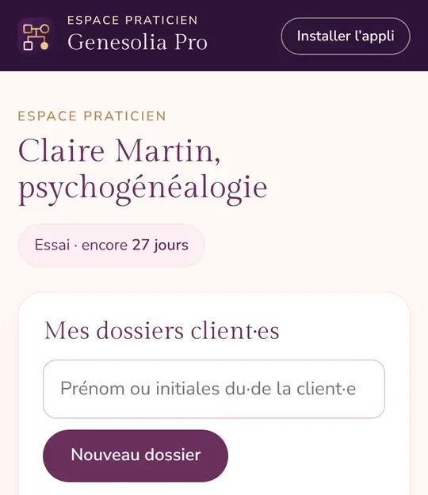
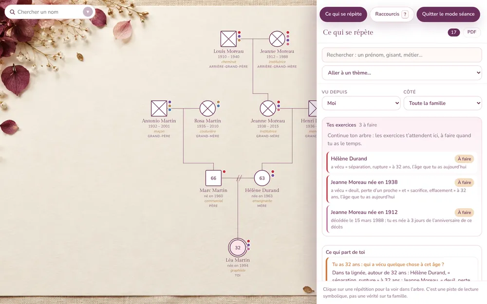
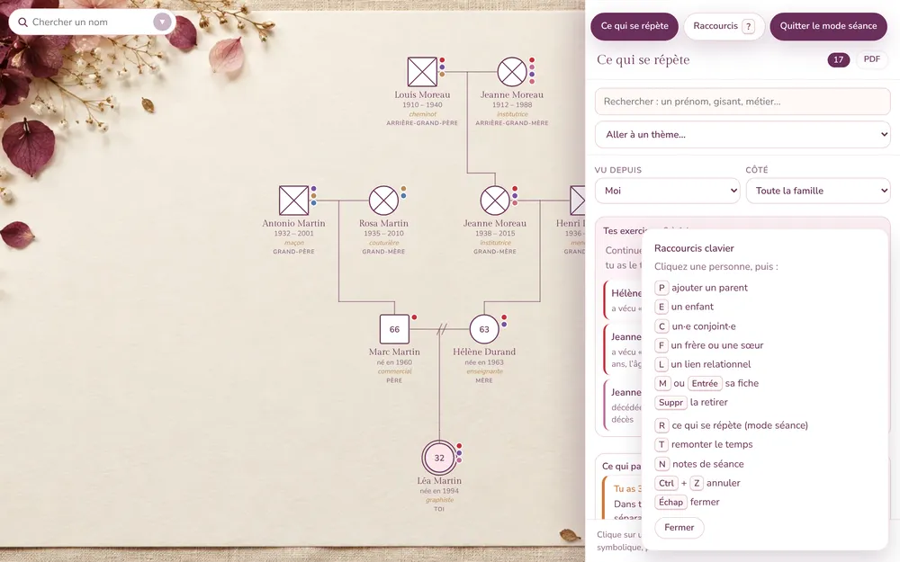
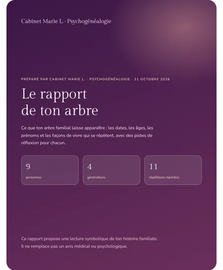

Genesolia Pro · Mode d’emploi
Genesolia Pro, pas à pas
Tout ce qu’il faut pour bien commencer avec votre Espace praticien, écran par écran, avec la famille fictive de Léa. Vous pouvez y revenir chaque fois que vous en avez besoin.
À quoi sert Genesolia Pro
C’est votre cabinet en ligne pour la psychogénéalogie. Un dossier par client·e, avec son arbre. Les répétitions repérées pendant la saisie : âges, dates, prénoms, places dans la fratrie, deuils. Le mode séance pour regarder l’arbre à deux, en plein écran. Vos notes de séance, chiffrées. Et à la fin, un rapport à votre nom et l’arbre remis à votre client·e.
Tout s’ouvre dans votre navigateur, sur ordinateur, tablette ou téléphone. Vos dossiers vous suivent d’un appareil à l’autre.
1Installez Genesolia Pro sur votre téléphone ou votre ordinateur
Rien à télécharger dans un magasin d’applis : Genesolia Pro s’ouvre dans votre navigateur. Ajoutez-la à votre écran d’accueil, elle s’ouvre ensuite comme une appli, avec sa barre en bas.
- Ouvrez Genesolia Pro et connectez-vous.
- Sur iPhone (Safari) : touchez le bouton Partager, puis Sur l’écran d’accueil, puis Ajouter.
- Sur Android (Chrome) : touchez le menu ⋮ en haut à droite, puis Installer l’application (ou Ajouter à l’écran d’accueil).
- Sur ordinateur (Chrome ou Edge) : cliquez sur l’icône d’installation dans la barre d’adresse, ou sur Installer l’appli en haut de votre espace.
Dans votre espace, la carte L’appli sur votre téléphone et son bouton Installer l’appli Genesolia Pro vous guident aussi. Une fois l’appli installée, la carte disparaît.
Quatre onglets, dans la barre en bas : Dossiers, Nouveau, Démo, Mon activité.
2Ouvrir votre espace et vos 30 jours offerts
Sur Genesolia Pro, touchez Commencer mes 30 jours offerts pour créer votre compte, ou J’ai déjà un espace pour vous connecter. Sans carte bancaire.
Puis ouvrez votre Espace praticien :
- Le nom de votre activité : c’est lui qui apparaît sur vos rapports et vos liens de partage. Vous pouvez le changer plus tard, dans Mon activité.
- Votre pratique et votre ville, si vous le souhaitez.
- Deux cases à cocher : les conditions de l’Espace praticien et l’accord de sous-traitance des données, puis l’accord pour garder vos notes de séance chiffrées.
En haut de votre espace, vous voyez où en est votre essai : « Essai · encore 27 jours ». La carte Pour bien commencer coche vos premiers pas au fil de l’usage : créer un premier dossier, ouvrir le mode séance, générer un rapport, envoyer un lien de partage.
3Créer un dossier client·e
Dans Mes dossiers client·es (onglet Nouveau), tapez le prénom ou les initiales de votre client·e. Pour la confidentialité, les initiales suffisent.
Cochez la case : votre client·e est d’accord pour que vous créiez son dossier et que vous y notiez son histoire familiale, y compris des informations sensibles (deuils, naissances, secrets de famille). Touchez Nouveau dossier : l’arbre s’ouvre, prêt à être dessiné.
Un dossier = un arbre. Chaque dossier de la liste a ses boutons : Ouvrir, Mode séance, Rapport, Notes de séance, Questionnaire, Partager, et plus discrets, Renommer et Supprimer.
Dès 4 dossiers, une recherche et un tri apparaissent au-dessus de la liste. Vos arbres personnels restent à part, dans Mes arbres personnels.
Envie d’essayer d’abord ? Touchez Ouvrir le dossier exemple : la famille fictive de Léa, déjà remplie, pour voir les répétitions, le mode séance et le rapport sans toucher à vos vrais dossiers.

4Le questionnaire à envoyer avant la séance
Pour ne pas passer la première séance à noter des dates, envoyez le questionnaire. Votre client·e le remplit chez lui ou chez elle, sans compte : sa famille proche, les dates, les moments marquants et ce qu’il ou elle en ressent.
- Sur le dossier, touchez Questionnaire, puis Créer un lien (valable 21 jours).
- Touchez Copier le lien et collez-le dans votre message.
- Quand les réponses arrivent, le bouton du dossier devient Réponses reçues. Vous lisez d’abord ce qui l’amène, ce qui lui semble se répéter et ce dont on ne parle pas.
- Touchez Ajouter à l’arbre : la famille se dessine. Les personnes déjà dans l’arbre sont seulement complétées, rien n’est effacé.
Vous pouvez désactiver un lien en attente, ou supprimer des réponses : ce qui est déjà dans l’arbre y reste.
5Dessiner et compléter l’arbre
Sur téléphone, l’arbre se lit autour d’une personne : ses parents au-dessus, son couple, ses frères et sœurs, ses enfants. Touchez Compléter sa fiche pour les dates et les événements, ou une case Ajouter pour ajouter quelqu’un. Touchez une autre personne pour la mettre au centre.
Sur ordinateur, l’arbre entier se dessine. Cliquez une personne pour ouvrir sa fiche ou ajouter un parent, un enfant, un·e conjoint·e, un frère ou une sœur. Les raccourcis clavier vont plus vite (voir le mode séance).
Plus l’arbre a de dates (naissances, décès, unions, départs, métiers), plus les répétitions ressortent. Vous pouvez aussi :
- poser 11 liens relationnels (fusionnel, ambivalent, coupé, secret partagé…) et un lien libre avec votre propre mot ;
- Remonter le temps : la famille l’année d’une naissance ou d’un deuil, et les échos d’âge de cette année-là ;
- ouvrir la Numérologie et l’Astrologie de la lignée, si votre pratique les utilise.

6Les répétitions repérées
Le panneau Ce qui se répète se remplit pendant la saisie : plus de 25 pistes repérées automatiquement. Dates anniversaires, mêmes âges, prénoms qui reviennent, places dans la fratrie, deuils, métiers.
- Cliquez une répétition : elle se trace dans l’arbre, avec ses lectures possibles et des questions à explorer en séance.
- Pour chaque piste, trois boutons : Ça me parle, À creuser, Pas pour moi. Une piste marquée « Pas pour moi » n’est jamais montrée sur le lien de partage.
- Les filtres Vu depuis et Côté changent la personne de référence et la branche regardée.
Dans la démo : Léa a 32 ans, et Hélène, sa mère, a vécu une séparation au même âge. La carte « Syndrome anniversaire » propose : « Que se passe-t-il dans ta vie en ce moment ? »

7Le mode séance : l’arbre en plein écran
Depuis la liste des dossiers ou la barre du dossier ouvert, touchez Mode séance. Les menus disparaissent, l’arbre passe en plein écran : au cabinet comme en visio, vous le regardez à deux.
En haut, une petite barre : Ce qui se répète ouvre les répétitions à côté de l’arbre, Notes ouvre vos notes de séance, Raccourcis ? rappelle les touches, Quitter le mode séance (ou Échap) vous ramène au dossier.
Les raccourcis clavier
Cliquez une personne, puis : P un parent, E un enfant, C un·e conjoint·e, F un frère ou une sœur, L un lien relationnel, M ou Entrée sa fiche, Suppr la retirer.
Et à tout moment : R ce qui se répète, T remonter le temps, N les notes de séance, Ctrl + Z annuler, ? l’aide des raccourcis.


8Les notes de séance, chiffrées
Touchez Notes de séance sur le dossier, ou Notes en mode séance : elles s’ouvrent à côté de l’arbre.
- Choisissez la date de la séance.
- Écrivez ce que vous observez : ce qui est apparu, les pistes à explorer, la prochaine étape.
- Touchez Ajouter cette note. Elle est chiffrée avant d’être enregistrée.
Vos notes sont rangées par date. Exporter en PDF les rassemble dans un document à votre nom, à archiver, ou à remettre si votre client·e vous demande ce que vous avez noté.
Elles ne s’ouvrent que depuis votre compte. Elles ne sont jamais montrées sur le lien de partage, ni copiées dans l’espace de votre client·e.
9Le rapport PDF et la version Word, à votre nom
Touchez Rapport sur le dossier, ou Mon rapport dans le dossier ouvert. Le rapport est inclus dans votre Espace praticien : régénérez-le autant de fois que vous voulez, il suit chaque ajout.
- La couverture porte le nom de votre activité, celui de Mon activité.
- Dedans : l’arbre, les chiffres clés, chaque répétition expliquée avec ses pistes de réflexion, la lignée en nombres et dans les étoiles.
- Cochez Ajouter mes notes de séance en annexe si vous le souhaitez.
- Si vous avez trié les pistes, cochez Seulement les pistes marquées « Ça me parle » ou « À creuser ».
Générer le rapport (PDF), au prénom de votre client·e, donne un document prêt à envoyer ou à imprimer. Version Word, à retoucher (.docx) s’ouvre dans Word, Pages ou Google Docs : vous retouchez le texte avant de le remettre.

10Le lien de partage remis à votre client·e
Entre deux séances, votre client·e regarde son arbre par un lien, sans vos notes. Touchez Partager, choisissez ce qu’il montre, puis Créer le lien (valable 14 jours) et Copier le lien.
- Montrer « Ce qui se répète », ou l’arbre seul.
- Cacher les pistes délicates : deuils, pertes de grossesse, IVG, départs précoces.
- Lien de supervision, pour votre superviseure ou votre formatrice : le dossier est anonymisé, sans prénoms, ni lieux, ni dates exactes, ni notes.
Les liens actifs restent listés : Désactiver ce lien le coupe tout de suite.
Quand le travail est terminé
Sous le dossier, cochez Travail terminé : mon·ma client·e peut télécharger et garder son arbre, puis envoyez un lien. Votre client·e peut alors télécharger son arbre ou le garder dans son espace Genesolia, gratuit. Avant, rien ne peut être téléchargé ni imprimé.
Depuis un dossier ouvert, vous pouvez aussi commander l’arbre imprimé de votre client·e, livré chez lui ou chez elle.

11Importer un arbre Geneanet ou GEDCOM
Votre client·e a déjà fait son arbre sur Geneanet, Heredis, MyHeritage ou Ancestry ? Pas besoin de tout ressaisir.
- Demandez-lui un export au format GEDCOM (.ged) : c’est le plus fiable. Un PDF avec du texte fonctionne aussi.
- Dans le dossier ouvert, touchez le menu •••, puis Importer un arbre, et choisissez le fichier.
- Vérifiez ce qui a été lu, puis validez : les personnes entrent dans l’arbre.
Dans l’autre sens, Sauvegardes permet d’exporter l’arbre en GEDCOM.
12Votre fiche dans l’annuaire
Des personnes dessinent leur arbre sur Genesolia, puis cherchent quelqu’un pour les accompagner. L’annuaire les mène à vous.
Dans Mon activité, la carte Ma fiche dans l’annuaire : votre nom, votre activité, votre pratique, votre ville, en présentiel ou en visio, une présentation (700 caractères au plus), et si vous le souhaitez votre site, votre lien de prise de rendez-vous, votre téléphone ou votre e-mail.
Cochez Je publie ma fiche dans l’annuaire Genesolia, puis Enregistrer ma fiche. Chaque fiche est relue par Genesolia avant sa mise en ligne, sous 48 h. Elle est visible tant que votre Espace praticien est actif, et vous la retirez en décochant la case.
13La connexion en deux étapes
Vos dossiers contiennent des histoires de famille sensibles. Avec la double étape, votre mot de passe seul ne suffit plus : il faut aussi un code à 6 chiffres de votre téléphone.
- Dans Mon activité, carte Connexion en deux étapes, touchez Activer la connexion en deux étapes.
- Dans votre appli d’authentification (Google Authenticator, Microsoft Authenticator ou 1Password, gratuites), ajoutez un compte et scannez le code affiché.
- Tapez le code à 6 chiffres, puis Activer.
À chaque nouvelle connexion, Genesolia vous demande ce code. Il change toutes les 30 secondes.
14Vos données et la sous-traitance (RGPD)
Pour les dossiers de vos client·es, vous êtes responsable des données, et Genesolia votre sous-traitant. L’accord de sous-traitance (RGPD, article 28) le précise : où sont hébergées les données, qui y accède, ce qui se passe en cas d’incident et à la fin de votre abonnement.
Si vous ne l’avez pas encore accepté, une carte Les données de vos client·es s’affiche en haut de votre espace : Lire l’accord, puis J’accepte l’accord de sous-traitance.
- Les données sont hébergées en Europe (Irlande).
- Les notes de séance sont chiffrées avant d’être enregistrées.
- Avant chaque dossier, vous confirmez l’accord de votre client·e.
- Pas d’informations médicales dans les dossiers.
- Un·e client·e vous demande d’effacer son dossier ? Le bouton Supprimer du dossier efface l’arbre et ses notes.
- Un dossier est gardé tant que votre espace est ouvert, puis effacé 12 mois après la fin de votre abonnement.
15Votre abonnement
Vos 30 jours offerts comprennent tout, sans carte bancaire. Ensuite : 24 € par mois sans engagement, ou 240 € l’année.
Offre de Noël : pour tout abonnement pris avant le 31 décembre, 19 € par mois au lieu de 24 €, ou 190 € l’année au lieu de 240 €, garanti tant que votre abonnement continue.
Pendant l’essai, la carte Après votre essai vous attend dans votre espace. Cochez la case des conditions de l’Espace praticien et de l’accord de sous-traitance, puis choisissez la formule au mois ou à l’année. Abonnez-vous quand vous voulez avant la fin : votre Espace praticien continue sans coupure.
Sans abonnement, après l’essai, vos dossiers restent consultables. Pour créer de nouveaux dossiers, de nouveaux liens de partage ou de nouveaux questionnaires, il faut l’abonnement.
TVA non applicable, art. 293 B du CGI. Voir les conditions de l’Espace praticien.
La démo et la vidéo
La démo ouvre l’arbre de Léa, une famille fictive déjà remplie : essayez les répétitions, le mode séance et le rapport. Sans compte, rien n’est enregistré.
En 45 secondes : votre cliente remplit son questionnaire, son arbre se dessine, les répétitions ressortent, vous remontez le temps, vous remettez un rapport à votre nom. Famille fictive.
16Questions fréquentes
Mes client·es voient-ils ou elles mes notes ?
Jamais. Le lien de partage montre l’arbre sans vos notes ni vos repères. Quand vous remettez l’arbre, seules les personnes et leurs liens sont copiés.
Faut-il un compte à mes client·es ?
Non pour remplir le questionnaire ou regarder leur arbre : le lien suffit. Oui, gratuit, seulement pour garder leur arbre dans leur espace à la fin.
Je peux travailler sur mon téléphone et mon ordinateur ?
Oui. Connectez-vous avec le même compte : vous retrouvez vos dossiers, vos notes et vos liens sur tous vos appareils.
Que se passe-t-il à la fin de l’essai ?
Vos dossiers restent consultables. Pour en créer de nouveaux et envoyer de nouveaux liens, il faut l’abonnement.
Genesolia remplace-t-il un accompagnement ?
Non. Genesolia est un outil de travail et une grille de lecture symbolique de l’histoire familiale. Il ne remplace pas un avis médical ou psychologique. L’accompagnement reste le vôtre.
À vous de jouer
Ouvrez votre Espace praticien, créez un premier dossier, et laissez les répétitions ressortir.
Commencer mes 30 jours offerts Découvrir l’Espace praticien
Sans carte bancaire. Puis 19 € par mois avec l’offre de Noël, sans engagement. TVA non applicable, art. 293 B du CGI.